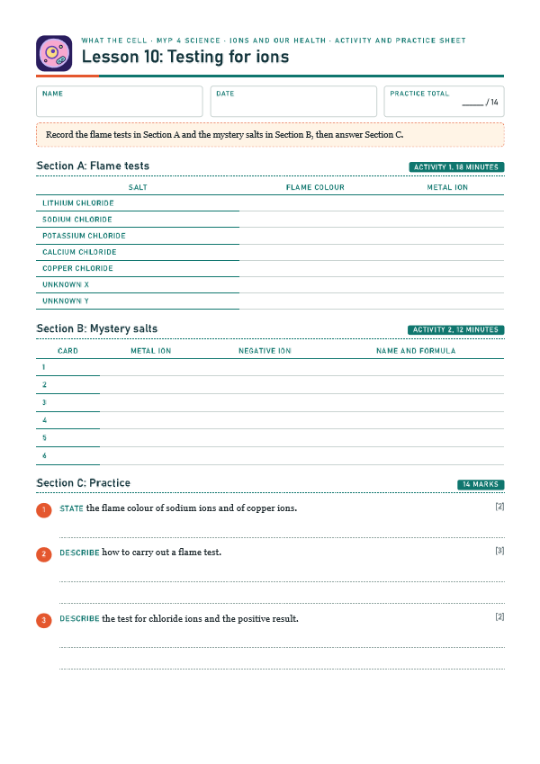

By the end of the lesson you can
- Identify metal ions from flame colours
- Describe precipitate tests for halide, sulfate and carbonate ions
- Use test results to identify an unknown salt
- Carry out flame tests safely
Keys: arrows or a presentation clicker move the slides, F for full screen. Slides with a red dot have a video or simulation.
Videos (all 5 minutes or less)
- 3:46
Testing for positive ions, part 1
FuseSchool. While you watch: Why must the loop be clean? Slide 10.
Simulations
- Lab
Print and practise

Activity and practice sheet
Used in the lesson’s activities, with practice questions. Your teacher has the answers.
Download (PDF)Lesson 10 slides
All 16 slides in one file, to read again or print. The video buttons on the slides open YouTube.
Download the slides (PDF)Revising? The Revision tab on the unit page has the unit notes and review.
Class activity pack
Everything to print for the lesson’s activities: picture cards, sorting mats, station cards with their kit lists, and the teacher’s set-up notes. Print it before class.
Download the activity pack (PDF)Notes: Testing for ions
flame test
Heating a metal compound in a flame to see the colour. For example: copper gives blue-green.
precipitate
An insoluble solid that forms when two solutions mix. For example: silver chloride is white.
halide
An ion of a group 7 element. For example: chloride, bromide, iodide.
silver nitrate
Used to test for halide ions. For example: gives a white, cream or yellow precipitate.
limewater
Turns milky with carbon dioxide. For example: test for a carbonate.
qualitative
A test that tells you what is there, not how much. For example: a flame colour.
Key words
| flame test | metal ion identified by flame colour |
|---|---|
| precipitate | insoluble solid formed in a solution |
| halide | chloride, bromide, iodide |
| silver nitrate | test for halides |
| barium chloride | test for sulfate |
| limewater | turns milky with carbon dioxide |